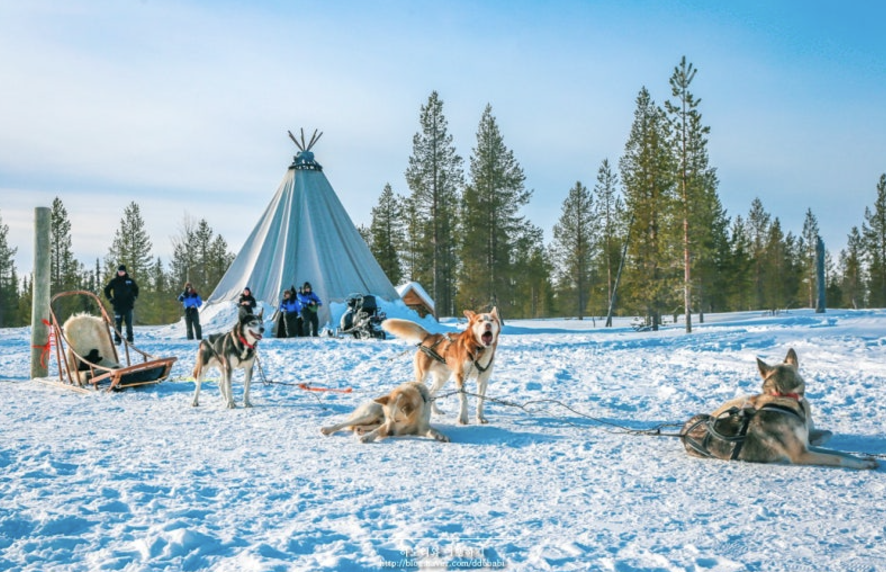
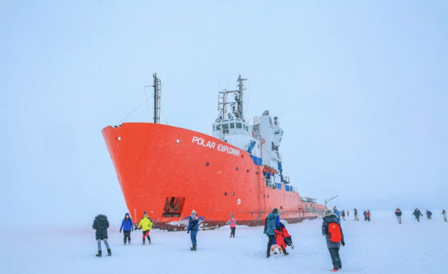
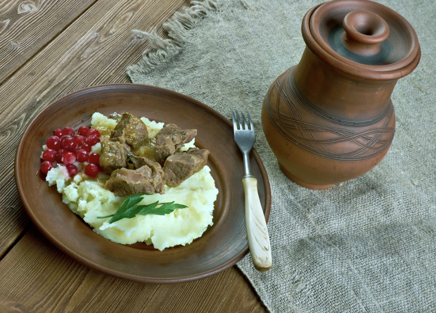
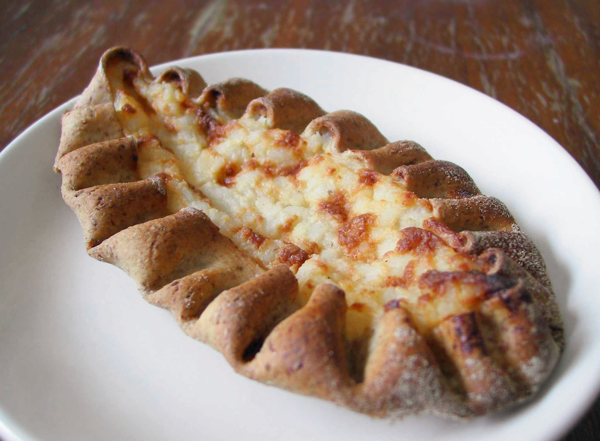

1. 핀란드에 대해 알아보자

북유럽의 산타 마을로 불리는 핀란드는 정보가 부족해 사람들이 잘 가는 곳은 아니다. 하지만 이번 기회에 핀란드라는 나라에 관심을 가져보는 것은 어떨까. 외교부가 선정한 안전한 나라로 오랫동안 중립을 지켜온 나라이며 유럽에서도 선진국에 속한다. 극동 지역에 속해서 겨울에는 빠르게 어둠이 찾아오고, 눈이 우리나라와 비교할 수 없을만큼 내린다. 188000개의 호수가 존재하는 아름다운 자연의 나라이면서, 동시에 수도인 헬싱키에는 역사적인 건물과 현대 건축물들, 박물관과 음악, 예술로 가득한 인상적인 나라이다.
2. 핀란드의 지리와 기후
세로로 긴 핀란드는 스웨덴을 바로 옆에 끼고 있다. 수십만개의 호수가 풍부한 수자원을 담당하고 자작나무가 전 국토를 뒤덮고 있다. 무려 국토의 75%가 숲이기 때문에 여행을 하면 많이 만나게 될 것이다. 핀란드의 날씨는 괴팍하기로 유명한데, 소련군과의 '겨울전쟁'에서도 날씨 때문에 고전을 면치 못했다고 한다. 한 겨울철 영하 30도...! 를 가볍게 볼 수 있다고 하니 추운걸 싫어하는 사람은 핀란드 여행을 고려해봐야한다...
3. 핀란드에 가면
1. 사리켈라의 노던 라이츠 빌리지

숙소를 소개할 줄은 몰랐지만 정말 예쁘고 특이한 경험이 되어서 소개한다. 이 숙소는 지붕 절반이 유리로 되어 있어 숨막히게 아름다운 핀란드의 자연을 일어나자마자 볼 수 있다. 레이저 열기 기술을 사용한 창문이기 때문에 폭설에도 언제나 깨끗한 창문을 유지할 수 있다. 또, 이 숙소가 있는 사리셀카라는 곳은 핀란드 최북단에 위치한 지역이라 많은 사람들의 버킷리스트인 오로라를 볼 수 있는 곳이다 ! 순록 사파리와 스노우모빌 등 여러 액티비티도 즐길 수 있는 1순위 방문 장소이다.
2. 칵슬라우타넨의 허스키 사파리
이곳은 북유럽 여행을 다녀온 사람들도 최고로 꼽는 액티비티를 체험할 수 있는 곳이다. 귀엽고 늠름한 허스키들이 끄는 썰매를 타고 하얀 눈밭을 달릴 수도 있고 개들과 놀이시간도 가질 수 있다. 순록과 비교해 훨등히 빠르기 때문에 그 재미는 배가 된다. 아름다운 숲속 풍경은 덤.
3. 아이스 브레이커
이것은 장소가 아닌 액티비티이다. 아이스 브레이커는 무려 쇄빙선을 타고 스웨덴까지 갔다가 다시 돌아오는 활동이다. 쇄빙선을 타고 얼음을 깨부수며 바다를 나아가는 것도 특별한 경험이지만 이것이 끝이 아니다. 바로 특수복을 입고 발트해에 입수하는 활동이 있다 ! 특수복을 입기 때문에 젖지도 않고 춥지도 않다. 북극해까지 가서 입수하는 경험은 평생 없을 것이다.
4. 산타클로스 빌리지

편지에 "산타클로스에게" 라고 적으면 이곳에 도착한다는 말이 있다. 여긴 핀란드의 로바니에미라는 지역으로 우리가 상상하던 산타 할아버지들이 마을을 돌아다닌다! 순록이 끄는 산타 썰매, 그림같은 트리 등을 구경할 수 있는 장소이다. 동심으로 돌아가는 경험을 원한다면 강력 추천한다.
4. 핀란드의 먹거리
1. 로히 케이토
북유럽에 갔으면 연어를 먹어줘야한다. 이 수프는 핀란드어로 '로히 께이또'라고 불리는 크림을 베이스로 만들어졌다. 연어와 감자가 가득 들어가고 빵에도 찍어먹기 때문에 식사 대용으로도 충분한 이 수프는 따뜻하게 당신의 몸을 녹여줄 것이다.
2. 포톤카리스티스
순록을 먹는다는 거부감이 들 수도 있다. 하지만 수도 헬싱키에도 외곽으로 조금만 나가도 순록 조심이라는 펫말을 볼 수 있을 정도로 핀란드 사람들에게는 순록이 흔하다. 이 순록의 고기를 먹곤 하는데 특유의 냄새 때문에 호불호가 갈린다고 한다. 주로 으깬 감자나 링곤베리를 곁들어 먹는데 식당에 따라 스테이크나 잘게 잘라 볶아내는 등 여러 방식으로 먹어볼 수 있다.
3. 카렐리안 파이
이 파이는 핀란드 전통 페이스트리이다. 쌀이나 으깬 감자를 섞어 만든 얇은 호밀 껍질로 만들어진다. 당근이나 쌀 푸딩이 들어가기도 하는 이 파이는 가벼운 간식이나 식사로 먹곤 한다. 가족들이 함께 모여 이 파이를 준비하는 것은 핀란드의 전통이고 단순한 식사 준비를 넘어서 핀란드의 전통과 유산을 연결하는 문화적 경험으로 여겨지는 의미 깊은 음식이다.